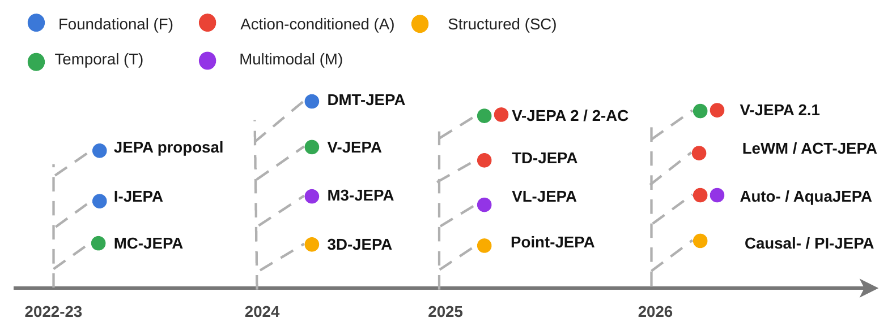
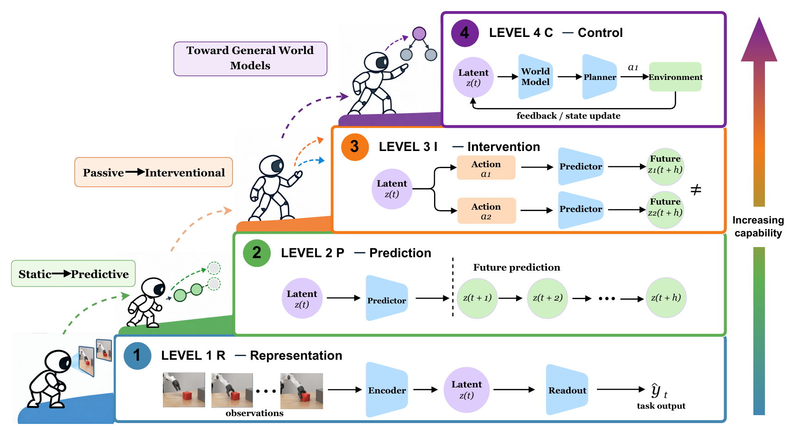

World models predict how an environment evolves so agents can anticipate future states and evaluate alternative actions. Joint-Embedding Predictive Architectures (JEPAs) encode context and target observations into latent representations and predict target features from context, bypassing full observation reconstruction.
This survey follows JEPA research from self-supervised image learning to temporal forecasting, action-conditioned dynamics, multimodal alignment, and structured scene modeling. It pairs a five-family taxonomy grouped by primary prediction task with an R/P/I/C capability analysis that assesses what reported experiments establish about representation, future prediction, action intervention, and closed-loop control.

Figure 1 · Representative developments across the five JEPA families (2022–2026).PDF p. 3 ↗
Five JEPA Families
Methods are organized by their primary prediction task in the manuscript; some systems span multiple families.
JEPA-F
Foundational & Static
Predicts masked or missing target representations using context from the same static observation, establishing target-sampling rules and representation-geometry constraints against collapse.
Learns from video or time series by predicting masked spatiotemporal tubes or forward latent states across time, separating within-clip representation learning from unobserved future prediction.
Masked video tubesMotion & contentMulti-horizon rolloutBelief-space prediction
JEPA-A
Action-Conditioned
Conditions future latent-state prediction on candidate actions for trajectory planning, or jointly learns latent future prediction and action policies through imitation learning.
Predicts target representations across modalities or fuses heterogeneous streams—such as vision, language, audio, LiDAR, and robot sensors—before prediction.
Organizes latent targets around explicit points, parts, objects, and spatial relations so local geometry and interacting entities remain accessible in the representation.
3D point clouds4D correspondenceObject-level maskingEntity relations
Representative Prediction Patterns
Interactive walkthrough of the five representative schematics redrawn in Figures 4–8 of the manuscript.
A context encoder processes visible image blocks while an EMA target encoder provides target block representations; the predictor estimates target latents conditioned on mask position tokens under an L2 loss.
Following the latent state-space view in Section 2.2, Table 2 evaluates what each paper's experiments demonstrate across four progressive levels.

Figure 2 · Progressive capability hierarchy from representation learning to closed-loop control.PDF p. 5 ↗
Level 1 · RStatic / Downstream
Representation
Are the learned features useful on downstream tasks?
Evaluated via linear probes, segmentation, detection, or transfer to verify whether task-relevant variables remain recoverable from the latent state.
zt = Eθ(ht) → readout ŷt
Level 2 · PTemporal / Future
Prediction
Does the model predict future states beyond the observed context?
Tested directly on unobserved future states and multi-step rollout stability across growing horizons.
ẑt+h = Pϕ(z≤t), h > 0
Level 3 · ICounterfactual
Intervention
Do predictions change appropriately when the action changes?
Requires comparing predicted outcomes across alternative candidate actions from a shared observation history.
ẑt+h = Pϕ(z≤t, at:t+h−1)
Level 4 · CClosed-Loop
Control
Does prediction help an agent act under feedback?
Distinguishes Csys (complete closed-loop system success) from Cattr (matched closed-loop ablation isolating the learned rollout's gain).
Csys (full loop) vs. Cattr (matched rollout ablation)
Table 2 Legend:D Direct testQ Related but incomplete evidence— No sufficient reported testView full Table 2 (PDF p. 7) ↗
Benchmarks & Evaluation Guide
Table 3 maps each family to evaluation tasks and metrics, and Tables 4–8 compile figures reported in the original studies. Numerical results are directly comparable under matched tasks, splits, and evaluation protocols.
Section 6 highlights five open research questions for moving latent prediction toward reliable world models.
1
Representation Stability and Adaptive Prediction Targets
Preventing dimensional collapse while matching target granularity and masking rules so latent states preserve decision-relevant variables alongside semantic features.
2
Invariance, Action Grounding, and Counterfactual Sensitivity
Ensuring predictors capture causal action effects—distinguishing candidate interventions from passive temporal correlations and out-of-policy observations.
3
Long-Horizon Prediction and Uncertainty-Aware Dynamics
Mitigating compounding rollout drift and multi-future averaging through probabilistic transitions, calibrated uncertainty, and closed-loop state correction.
4
Structured States and Compositional Generalization
Tracking object identities, contacts, and inter-entity relations dynamically under occlusion, object arrival, and unseen scene compositions.
5
Efficient Latent Prediction and Selective Verification
Use the BibTeX entry below to cite the current manuscript (PDF).
@misc{song_jepa_world_models_survey,
title = {From Joint-Embedding Prediction to World Models: A Survey},
author = {Song, Ziying and Wang, Qing and Wu, Peiliang and Yang, Hao and Huo, Yanchen and Yang, Lei and Wang, Li and Luo, Yadan and Zhu, Zheng},
note = {Manuscript in preparation},
url = {https://github.com/cuteaplane/jepa-world-models-survey}
}